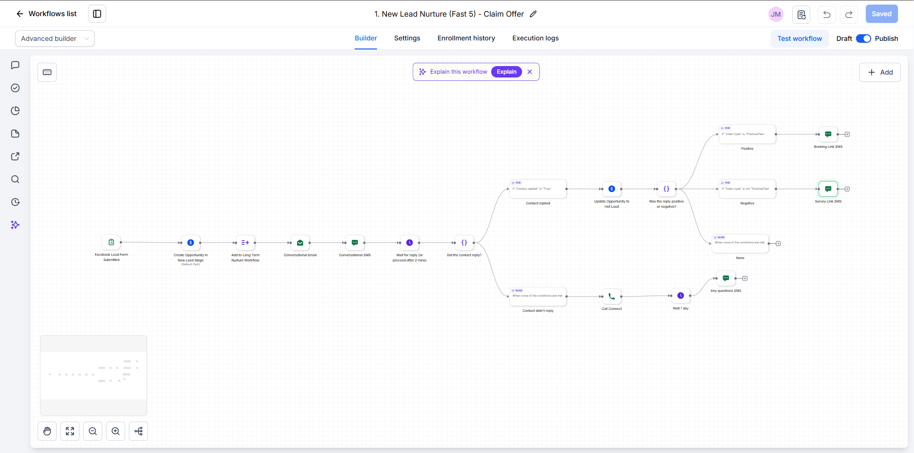

Expand
Workflow 01 · Lead nurture
New Lead Nurture — Claim Offer
Built for speed-to-lead. The moment someone submits a Facebook lead form, they're in the pipeline and hearing from the business — and the workflow decides what happens next based on whether, and how, they reply.
- Trigger: Facebook lead form submitted
- Opportunity created in New Lead; contact added to long-term nurture
- Conversational email + SMS go out instantly
- Waits for a reply (moves on after 2 minutes)
- Replied: moved to Hot Lead — positive replies get a booking link, negative ones a survey link
- No reply: Call Connect rings the lead, then an "any questions?" SMS the next day
Facebook Lead AdsSMSEmailCall ConnectReply branching